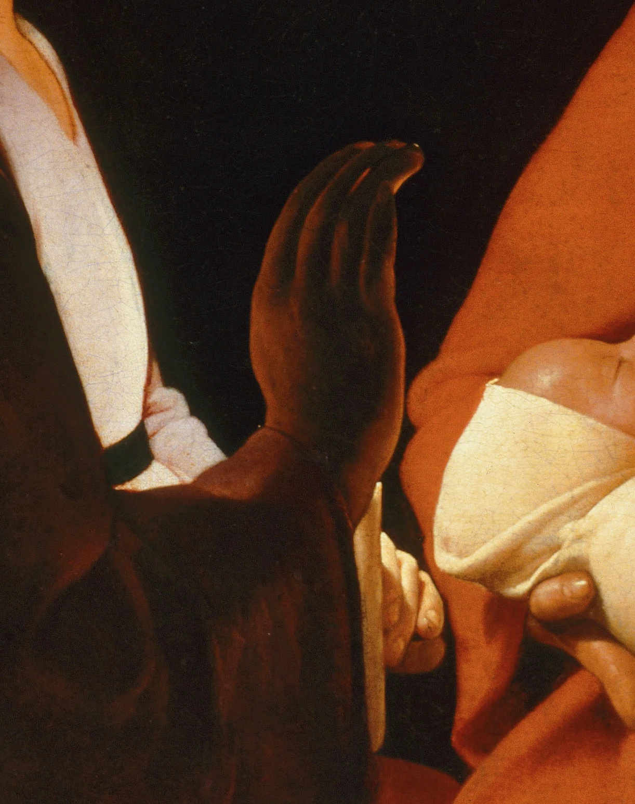
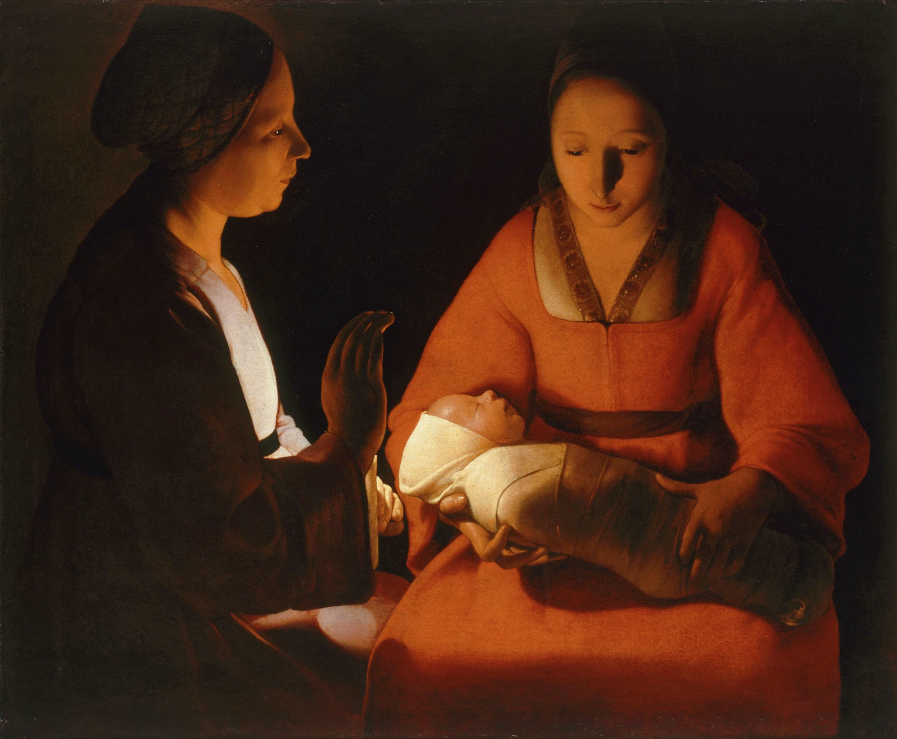
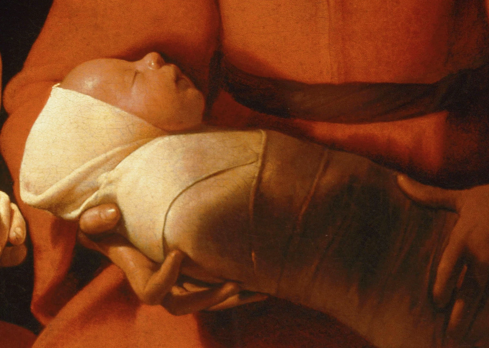

아직 펼치지 않은 카드성탄의 밤을 그린 그림 · 2갓난아기어둠 속 아기를 비추는 불빛, 그 촛불은 어디에 있을까요?아기 얼굴이 환하게 빛나. 불은 어디 있을까?
1645~1648년 무렵프랑스 동쪽 로렌 지방 · 지금은 서쪽 도시 렌의 미술관
갓난아기
이 그림의 촛불은 누군가의 손 뒤에 숨어 있어요. 1863년에는 누가 그렸는지조차 잘못 알려졌던 그림이에요. 손가락을 촛불 삼아 어둠 속 그림을 천천히 비춰, 빛이 닿은 곳을 하나씩 찾아보세요.
깜깜한 밤이야. 누가 손으로 촛불을 가려 주었대. 우리도 촛불을 들고 살금살금 비춰 볼까?
검수 전 시안이에요(기준서 1판). 장면에는 미술관·문화재 기록과 1863년의 기록에 있는 것만 옮겼고, 풀이가 갈리는 곳은 그렇다고 밝혔어요. 상상은 ‘눈 감고 상상해 보기’에만 썼어요.
시안 확인용카드 단계 미리 보기
1
1863년의 수첩
1863년, 프랑스의 학자 이폴리트 텐이 렌 미술관을 둘러보며 수첩에 그림 한 점을 적었어요.

“네덜란드 그림, 「갓난아기」, 르냉의 것으로 여겨짐. 두 여인이 잠든 여드레 된 아기를 바라본다.”
이폴리트 텐, 『여행 수첩』의 렌 미술관(1863) · 이 안내서가 옮김
‘여드레 된 아기’는 태어난 지 8일 된 아기라는 말이에요. 이 그림은 프랑스 혁명 때인 1794년 무렵, 나라를 떠난 귀족에게서 나라가 몰수한 재산으로 미술관에 들어왔어요. 문화재 기록에는 그 귀족의 이름이 적혀 있지 않아요.
텐이 볼 때 이 그림에는 이미 ‘갓난아기’라는 이름이 붙어 있었어요. 하지만 그린 사람은 프랑스의 화가 형제 르냉으로 잘못 알려져 있었어요.
옛날 한 학자가 이 그림을 보고 수첩에 적었어. “두 여인이 잠든 아기를 바라본다.”
물어보기너라면 이 그림을 보고 수첩에 뭐라고 적을래?
2
손 뒤의 촛불
방 안은 깜깜해요. 빛은 단 하나, 곁의 여인이 쥔 초에서 나와요.
그 불꽃은 여인이 세운 손바닥 뒤에 숨어 있어요. 손가락을 촛불 삼아, 어둠 속 그림을 천천히 비춰 보세요.
손가락이나 마우스로 어둠을 문질러 촛불로 비춰 보세요.
조르주 드 라 투르, 「갓난아기」, 1645~1648년 무렵 · 렌 미술관 · 조르주 드 라 투르 그림 · 퍼블릭 도메인 · 위키미디어 공용
빛이 닿으면 숨은 표시가 나타나요.
모두 밝혀도 불꽃은 끝내 보이지 않아요. 화가 라 투르는 불꽃을 손 뒤에 숨기고, 그 빛이 닿은 얼굴과 손만 그렸어요.
깜깜한 방이야. 촛불을 들고 살금살금 비춰 볼까? 아기가 깨지 않게!
물어보기불꽃은 어디에 숨어 있을까?
3
라 투르의 손과 촛불
라 투르는 다른 그림에서도 불꽃을 손으로 감쌌어요. 「목수 성 요셉」에서는 어린 예수가 초를 들고, 다른 손으로 불꽃을 감싸 아버지 요셉의 일을 비춰 줘요.
루브르 박물관은 이 아이의 손가락이 불꽃 때문에 ‘거의 투명하게’ 그려졌다고 설명해요. 불빛이 손가락을 지나 붉게 비치는 거예요.


「목자들의 경배」(양치기들이 아기 예수를 찾아온 장면)에서도 오른쪽의 수염 난 노인이 초를 들고 손으로 불꽃을 가렸어요. 두 그림 모두 빛은 촛불 하나에서 나와, 사람들의 얼굴과 손을 차례로 밝혀요.
이 그림에서도 손으로 촛불을 감쌌어. 손가락이 빨갛게 비쳐!
물어보기손전등을 손바닥에 대 본 적 있어? 어떻게 보였어?
4
이름을 되찾은 그림
라 투르의 그림들은 오랫동안 다른 화가의 그림으로 여겨졌어요. 혼트호르스트, 리베라, 수르바란, 벨라스케스, 페르메이르 같은 이름이 붙기도 했어요.
낭트 미술관에는 ‘라 투르’라는 서명이 적힌 그림이 두 점 있었어요. 그런데 그 그림들마저 헤라르트 세헤르스라는 다른 화가의 것으로 알려져 있었어요. 서명이 있어도, ‘라 투르’라는 이름 자체가 잊혀 있었거든요.

1915년, 독일의 미술사학자 헤르만 포스가 낭트 그림의 서명을 알아보았어요. 그리고 서명이 없는 렌의 「갓난아기」도 같은 화가의 그림이라고 알아보았어요.
1863년 텐이 ‘네덜란드 그림’이라고 적은 지 쉰 해 남짓 만에, 이 그림은 제 화가의 이름을 찾았어요.
그린 사람을 잘못 알았던 그날에도, 텐은 수첩에 이 그림을 ‘참으로 숭고한 것’이라고 적었어요.
그림 속 두 여인과 아기를 여러분은 어떻게 보고 싶나요?
오랫동안 다른 사람이 그린 줄 알았대. 다른 그림에 적힌 이름을 보고 진짜 화가를 알아냈어! 옛날 학자는 그때도 이 그림이 정말 훌륭하다고 적었대.
물어보기네 그림에는 어디에 이름을 쓰고 싶어?
눈 감고 상상해 보기
겨울밤, 작은 방에 초 한 자루가 타고 있어요. 바람이 문틈으로 들어오자 불꽃이 살짝 흔들려요. 곁에 앉은 여인이 아무 말 없이 손바닥을 세워 불꽃 앞에 대요. 방 안이 조금 더 어두워지고, 잠든 아기의 얼굴만 따뜻하게 남아요. 새근새근 숨소리만 들려요.
눈을 감아 봐. 깜깜한 방에 촛불 하나. 아기가 새근새근 자고 있어. 누군가 손으로 불빛을 살짝 가려 줘. 쉿, 숨소리만 들려.
나의 자리
누군가를 위해 내 손으로 바람을 막아 준 적이 있나요? 지금 내가 지켜 주고 싶은 작은 불빛은 무엇인가요?
아기가 깨지 않게 하려면 어떻게 해야 할까? 쉿, 작게 말해 볼까?
마음에 닿는 한 줄을 고르거나 직접 써 보세요. 한 줄을 남기면 이 자리의 도장이 찍혀요. 이 기기에만 저장돼요.
더 깊이
이야기를 보다 궁금해질 만한 것들이에요. 답을 읽거나 짧은 영화로 보세요.
라 투르는 왜 잊혔고, 어떻게 이름을 되찾았어요?

이 아기는 정말 아기 예수예요?
뒷이야기
아직 펼치지 않은 이야기예요. 누르면 이야기가 펼쳐지고 색이 돌아와요. 더 알고 싶으면 근거를 따라가 보세요.
다 펼치면, 다음에 오실 때 새 이야기가 찾아와요.
오늘의 뒷이야기는 여기까지예요. 다음에 오시면 새 이야기가 기다리고 있어요.
펼친 뒷이야기 · 누르면 다시 볼 수 있어요
더 찾아보기
기록마다 다른 점
언제 그렸을까 렌 미술관 안내서는 1645년 무렵, 아트 뉴스페이퍼는 1647~1648년 무렵이라고 적어요. 한 기사는 본문에서 1648년이라고 썼어요. 그림에 서명이 없어서 학자마다 조금씩 달라요.
누가 그렸다고 여겼나 1859년 미술관 목록과 1863년 텐은 르냉의 그림으로 적었고, 텐은 ‘네덜란드 그림’이라고도 했어요.
포스가 알아본 해 아트 뉴스페이퍼는 포스가 1915년에 렌의 그림을 낭트의 그림들과 이었다고 써요. 프랑스 문화재 기록에는 포스의 판정이 1920년으로 적혀 있어요.
두 여인은 누구일까 렌 미술관 안내서는 아기를 예수로 소개하면서도 ‘아기와 엄마와 할머니’라고 불러요. 마리아와 안나로 보는 풀이도, 어느 집 갓난아기로 보는 풀이도 있어요.
왜 잊혔을까 1997년 아이리시 타임스 기사는 두 풀이를 소개해요. 루브르 관장 피에르 로장베르는 로렌을 휩쓴 전쟁을, 다른 학자는 크게 바뀐 취향을 꼽았어요.
그림과 함께 읽는 말씀
그리스도인들은 성탄 밤의 아기를 ‘세상에 온 빛’과 함께 읽어 왔어요. 말씀은 뜻만 옮기고, 본문은 대한성서공회 개역개정으로 이어 드려요.
누가복음 2장 7절 마리아가 아기를 낳아 강보로 싸서 구유에 뉘었다는 말씀이에요. 그림 속 아기도 흰 천에 꼭 싸여 있어요.
요한복음 1장 5절 빛이 어둠 속에 비치되, 어둠이 그 빛을 이기지 못한다는 말씀이에요.
직접 가 보기
확인한 날 · 2026년 11월 18일 · 바뀌기 쉬운 정보라 정기적으로 다시 확인해요
프랑스 렌 미술관(20 Quai Émile-Zola)에 있어요. 화요일부터 일요일까지 오전 10시~오후 6시에 열고, 월요일과 공휴일은 쉬어요. 상설 전시는 누구나 무료예요.
지하철 A선 레퓌블리크역이나 B선 생제르맹역에서 가까워요. 다른 전시에 빌려 줄 때가 있으니, 가기 전에 미술관 누리집에서 확인해 주세요.
빛이 닿은 다섯 곳 금박
촛불로 그림을 비춰 숨은 표시 다섯 곳을 모두 찾으면 카드에 금박이 입혀져요.
촛불로 비춰 숨은 표시 다섯 곳 모두 찾기
두 여인은 누구일까 채색
둘 가운데 하나만 해도 카드가 채색돼요.
그림 속 두 여인을 어떻게 볼지 고르기
아이와 함께 ‘영화처럼 보기’를 끝까지 보기
근거 보기 (27)
- 프랑스 문화부 조콩드: Le Nouveau-né(INV 794.2.6) — 크기, 혁명 때 거둔 재산, 옛 주인 ‘망명 귀족’, 1794년, 옛 판정 스할컨(1794년 목록)·르냉(1859년 목록), 포스의 판정(1920년), 달리의 석판화, 미국의 작게 줄인 복사본(1934·1939년 언급), 1936년 뉴욕 전시
- 이폴리트 텐, 『여행 수첩』 렌 미술관(1863) — ‘네덜란드 그림, 「갓난아기」, 르냉의 것으로 여겨짐, 두 여인이 잠든 여드레 된 아기를 바라본다’
- The Art Newspaper(2025.10.1) — 1915년 포스가 서명 있는 낭트의 두 그림과 서명 없는 렌의 그림을 이음, 낭트 그림마저 세헤르스의 것으로 알려졌던 일, 다른 화가 이름으로 불린 라 투르의 그림들, 1647~1648년 무렵
- 루브르 박물관: Saint Joseph charpentier(RF 1948 27) — 1642~1644년 무렵, 촛불을 든 아이, 불꽃 때문에 거의 투명하게 그린 손가락, 라 투르(1593~1652), 일상에서 나오는 거룩함, 퍼시 무어 터너의 선물(1948)
- 렌 미술관 쉬운 안내서(2024) — 1645년 무렵, ‘아기와 엄마와 할머니’, ‘엄마 마리아의 품에서 잠든 예수’, 촛불 하나의 빛, 미술관에서 가장 잘 알려진 그림
- Aleteia(2025.12.23) — 앞쪽 손에 일부 가려진 불꽃, 알 수 없게 만든 빛의 시작, 갓난아기에게서 나오는 듯한 빛과 하나님이 함께 계신다는 표시라는 풀이, 소박한 옷, 1648년(본문)
- DailyArt: The Newborn — 뜻이 열려 있는 그림, 마리아·안나·아기 예수로 보는 풀이와 어느 집 갓난아기로 보는 풀이
- 렌 미술관: 여는 시간·요금·찾아가는 길
- 브리태니커 Georges de La Tour — 1593~1652년, 살아서는 이름났으나 20세기까지 잊힘, 루이 13세·로렌 공작이 그림을 모음, 1915년 뒤 포스와 학자들이 그림을 가려냄
- 유니베르살리스 「Georges de La Tour」(로베르 포르) — 이름났다가 잊힌 화가, 1638년 뤼네빌이 불타며 사라졌을 그림, 1863년 졸리의 옛 문서 연구, 1915년 포스
- 아이리시 타임스(1997.10.18) — 서명이 드물어 다른 화가들 것으로 여겨짐, 잊힌 까닭의 두 풀이(크게 바뀐 취향·로렌의 전쟁)
- Finestre sull’Arte(2020.7.18) — 1915년 포스가 렌과 낭트의 세 그림을 졸리의 옛 문서에 견주어 라 투르의 것으로 봄, 흔히 네덜란드·플랑드르 화가들과 견주어진 그림들
- 레지스 뷔르네, 「베드로의 부인」, 『르 몽드 드 라 비블』 234호 — 1650년, 세 불빛과 등을 보인 사람에게 가려진 촛불
- 위키백과 The Denial of Saint Peter (La Tour)(길잡이) — 1650년 서명과 날짜, 1810년 낭트 미술관으로
- 브리태니커 Le Nain brothers — 랑의 세 형제, 파리의 함께 쓴 작업실, 농부의 삶, ‘르냉 문제’
- 내셔널 갤러리: 고드프리트 스할컨 — 1643~1706년, 촛불 장면으로 알려진 화가
- 프랑스 문화부 보도 자료(2010.1.14) — 르냉의 「베드로의 부인」, 2000년 낭시 경매의 ‘17세기 로렌 화파’
- 빅토리아 앤드 앨버트 박물관: 강보 띠(1600~1625년) — 강보 싸기의 까닭
- 빅토리아 앤드 앨버트 박물관: 강보 띠(이탈리아) — 머리만 내놓음, 6~12달
- 가톨릭 백과사전(1907) Sts. Joachim and Anne — 외경에서 온 이름, 원복음서의 가장 이른 꼴 150년 무렵
- 브리태니커 Saint Anne — 조부모의 수호성인
- 브리태니커 Émigré — 망명 귀족, 1792년 1월 사형과 재산 몰수
- 렌 교육청 자료(2018) — 1794년 혁명 때 거둔 작품으로 시작한 렌 미술관
- 브리태니커 Hippolyte Taine — 비평가·역사가, 1864년 파리 국립 미술 학교 교수, 『예술 철학』
- 미술사학자 사전: Voss, Hermann — 1915년 라 투르 글, 해임, 총통 미술관 일
- 위키백과 Hermann Voss (art historian)(길잡이) — 1943년 드레스덴과 린츠, 약탈 미술품
- 브리태니커 Salvador Dalí — 스페인의 미술가, 초현실주의
그림·사진·소리 출처
- 사진: Fab5669 · CC0 · 위키미디어 공용
- 조르주 드 라 투르 그림 · 퍼블릭 도메인 · 위키미디어 공용
- 조르주 드 라 투르 그림 · 퍼블릭 도메인 · 위키미디어 공용
- 조르주 드 라 투르 그림 · 퍼블릭 도메인 · 위키미디어 공용
- 조르주 드 라 투르 그림 · 퍼블릭 도메인 · 위키미디어 공용
- 조르주 드 라 투르 그림 · 퍼블릭 도메인 · 위키미디어 공용
- 조르주 드 라 투르 그림 · 퍼블릭 도메인 · 위키미디어 공용
- 조르주 드 라 투르 그림 · 퍼블릭 도메인 · 위키미디어 공용
- 조르주 드 라 투르 그림 · 퍼블릭 도메인 · 위키미디어 공용
- 조르주 드 라 투르 그림 · 퍼블릭 도메인 · 위키미디어 공용
- 조르주 드 라 투르 그림 · 퍼블릭 도메인 · 위키미디어 공용
‘처음 만나는 기독교 문화’의 깊은 카드예요. 카드 단계와 남긴 글은 이 기기에만 저장돼요.